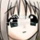
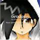
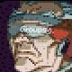

Dora Saga: Till the end of saga.

Dora Saga: Till the end of saga.
สวัสดีชาวบอร์ดแฟนอาร์ทและฟิกชั่นอีโค่ทุกคน เราเป็นอีกคนนึงที่สนใจเรื่องการแต่ฟิกวาดรูปเหมือนกัน ยังไงก็ขอฝากตัวด้วยนะ วันนี้ลองเอาผลงานที่ทำกับเพื่อนในชื่อกลุ่ม TC Studio ของคณะเกมคอมพิวเตอร์มัลติมีเดีย ม.รังสิต มาลองลงดู ถ้าผิดพลาดประการใดก็ขออภัยมา ณ ที่นี้ด้วย
อะไรคือ โดราซาก้า?
Dora Saga เป็นเกมแนว RPG ที่มีระบบเหมือน Dragon Quest ถูกสร้างด้วยโปรแกรม RPG Maker2000 เป็นจุดเริ่ม
โดยที่เพื่อนเราซึ่งเป็นโปรแกรมเมอร์หลักสร้างขึ้นครั้งแรกในชื่อที่เรียกว่า Dora Full Adventure 2 (มีภาคแรกด้วย)
เนื้อเรื่องเกมในช่วงแรกที่สร้างใหม่ๆเป็นเกมที่เนื้อเรื่องแนวผจญภัยเชยๆ เล่นเป็นโดราเอม่อนเก็บคริสตัล ทั้ง 4 ให้ครบแล้วปราบบอสใหญ่ ไม่มีอะไรมากนัก
ต่อมาในช่วงที่เอวาเกเลี่ยนกำลังดังนั้นเอง เพื่อนเราก็เขียนการ์ตูนในชื่อที่เรียกว่า โดราเกเลี่ยน เป็นเรื่องราวของเอวาแต่ตัวละครดันเป็นโดราเอม่อนซะงั้น
หลังจากที่เวลาผ่านไป เพื่อนกับเราก็ได้ลงความเห็นว่า โดราอันเก่าเป็นอะไรที่น่าจะแก้ไขเนื้อเรื่องให้มันดูมีสาระมากกว่ารวมไอเท็มปราบจอมมาร จึงได้นำมาแก้ไขใหม่ในชื่อของโดราซาก้า
แต่ด้วยสาเหตุหลายๆอย่างๆ ทั้งเรื่องเรียน ทั้งความคิดที่เปลี่ยนไปตามกาลเวลา บวกกับความขี้เกียจของคนสร้าง โดราซาก้าก็โดนดองเรื่อยมาจนกระทั่งสร้างจนจบเกมได้ในปัจจุบัน
เนื้อหาเกมในปัจจุบันเป็นการเอาธีมของ โดราเอม่อน กับ เอวาเกเลี่ยน มาไว้ด้วยกัน รวมถึงได้ยัดตัวละครจากอนิเมะเรื่องดังๆหลายๆเรื่องลงไปเป็นตัวหลักบ้าง npc บ้าง แต่เนื้อเรื่องนั้นถูกเขียนใหม่ทั้งหมด ไม่เกี่ยวข้องกับเนื้อเรื่องหลักของโดราเอม่อน และ เอวาเกเลี่ยนโดยตรง ซึ่งในตัวละครหลักจะมีเพียงโดราเอม่อนที่ถูกวาดขึ้นมาใหม่ พร้อมกับตัวละคร original อีกจำนวนหนึ่งด้วยเช่นกัน
Story
ในสมัยโบราณมาแล้ว ก่อนที่ใครจะล่วงรู้ได้ เหล่าดวงดาวทั้งหลายได้ถือกำเนิดขึ้นและสร้างสรรค์สิ่งต่างๆขึ้นมา ต้นไม้ แม่น้ำ สัตว์ต่างๆ รวมถึงมนุษย์ พลังงานเหล่านี้ถูกเรียกขานกันว่า จิตวิญญาณของดวงดาว
ในเวลาไม่นานนั้นเองที่มนุษย์กลุ่มหนึ่งได้ค้นพบจิตวิญญาณของดวงดาวนั้น พวกเขาได้เรียกมันว่า Genesis
หลังจากการค้นพบเจเนซิสนั้นเอง พัฒนาการของมนุษย์ได้เจริญขึ้นถึงขีดสุด อำนาจของ เจเนซิสได้ให้ทุกอย่างมากกว่าพลังงานทุกรูปแบบที่มนุษย์เคยมีมา แต่อย่างไรก็ดีเมื่อมีจุดเริ่มต้นก็ต้องมีจุดจบ จิตใจของมนุษย์ได้ถูกอำนาจของเจเนซิสครอบงำ ความต้องการอำนาจและครอบครองทุกสรรพสิ่งดวงดาวได้แผ่ขยายไปทั่วดวงดาว
ช่วงนี้เองที่มนุษย์ได้ใช้พลังของเจเนซิสสร้างอาวุธสุดยอดที่ใช้พลังงานจากดวงดาว
อาวุธเจเนซิสที่ไม่มีใครสามารถที่จะต่อกรได้
เครื่องจักรสังหารที่ถูกเรียกว่า DORA
โดราได้ถูกใช้ในการทำสงครามนับไม่ถ้วน ไม่มีใครที่สามารถต่อกรมันได้ แต่ในช่วงสุดท้ายนั้นเอง ราวกับว่าจิตวิญญาณของดวงดาวไม่อาจทนพฤติกรรมที่เลวร้ายของมนุษย์นี้ได้
โดราได้เกิดบ้าคลั่งขึ้น มนุษย์ไม่สามารถควบคุมเครื่องจักรสังหารของตนได้อีกต่อไป ในที่สุดโดราก็ได้ทำลายอารยะธรรมเกือบทั้งหมดของมนุษย์ลงภายในชั่วเวลาเพียงข้ามคืน แต่ก็ถูกหยุดยั้งไว้ได้ด้วยเด็กที่มีพลังพิเศษคนหนึ่ง โดราถูกผนึกไว้พร้อมกับพลังของเหล่าเจเนซิส
เวลาผ่านไปหลังจากเหตุการณ์นั้น เรื่องของโดราก็ค่อยๆถูกลืมหายไปตามกาลเวลา
อารยะธรรมของมนุษย์ก็ได้ฟื้นตัวขึ้นอย่างช้าๆ
ทุกอย่างดูจะไปได้ด้วยดีหากไม่มีการรายงานว่าพบบางสิ่งบางอย่างที่ถูกผนึกอยู่ในบริเวณภูเขาหิมะ พร้อมกับการตื่นของเจเนซิสทั้งหมด
ราวกับว่าบทโศกนาฏกรรมกำลังจะกลับมาฉายซ้ำอีกครั้งหนึ่ง หลังจากเลือนหายไปถึงหนึ่งพันปี...
Main Character
Aetera Force
อาณาจักรที่รุ่งเรืองด้านเวทมนตร์ ออกตามหาคริสตัลเจเนซิส และโดราเพื่อยับยั้งหายนะและสงครามที่กำลังจะเกิดขึ้น
DoraOne อาวุธสงครามสมัยโบราณที่ตื่นขึ้นในภูเขาน้ำแข็ง ปัจจุบันถูกผนึกพลังไว้ทำให้สูญเสียความทรงจำ มีความกระตือรือร้นที่จะต่อสู้อยู่ตลอดเวลา

Rush หมาผู้ใช้เวทย์ที่สามารถพูดได้ ไม่มีบทเกี่ยวกับเนื้อเรื่องหลัก เป็นแค่ตัวละครเก็บตกที่หลุดรอดมาจากภาคแรก

Dr. Leon มาสเตอร์คนปัจจุบันของโดราวัน เด็กอัจฉริยะที่ทำงานให้ Aetera มีความเป็นผู้นำสูง ได้รับภารกิจจากพระราชาให้ค้นหาโดราและรวบรวมคริสตัล

Dora02 น้องสาวของโดราวัน เป็นรุ่นผลิตทีหลัง นิสัยคล้ายกับโดราวันแต่มีความรู้สึกของมนุษย์มากกว่า ในใจปฏิเสธการเป็นอาวูสงครามของตนเอง

Lunar มาสเตอร์คนปัจจุบันของโดรา02 เด็กสาวม.ปลายที่มีความสามารถในการใช้ดาบและควบคุมเลือดได้ ปัจจุบันเป็นองครักษ์ของเอมิ



Mint จอมเวทย์แห่งเอเทล่า เพื่อนสนิทของลูน่า เป็นคนที่ค่อนข้างขี้ขลาดและไม่มั่นใจในตัวเอง แต่จริงๆความสามารถของเธอนั้นสูงมากAmi องค์หญิงของเอเทล่า เป็นคนที่เงียบขรึมไม่ค่อยพูดจา เธอเป็นคนที่กุมความลับบางอย่างเอาไว้



Hans กษัตริย์ของเอเทล่า ด้วยเหตุผลบางอย่างทำให้เขาเป็นอมตะและไม่มีวันแก่ เขารู้ถึงภัยที่กำลังจะเกิดขึ้นและได้ให้เลออนออกตามหาทั้งโดราและคริสตัลYuedom Force
อาณาจักรที่รุ่งเรืองด้านเทคโนโลยี เป็นมหาอำนาจทางตอนใต้ หลังจากค้นพบความลับของโดราและคริสตัลเจเนซิส ยูดอมจึงได้เริ่มค้นหา และเปิดฉากโจมตีอาณาจักรต่างๆเพื่อให้ทั้งโลกตกอยู่ภายใต้การควบคุมของพวกตน


Seele ผู้นำสูงสุดของยูดอม มีความทะเยอทะยานที่จะปกครองโลกทั้งหมดไว้ภายใต้อำนาจของตนTharm ชายปริศนาที่ทำงานให้ยูดอม เป็นคนที่รู้เรื่องสงครามในอดีตและเรื่องราวของเจเนซิสทั้งหมด

Download เกมที่นี่ http://upload.mthai.com/F1/48300383a9316
กลุ่ม RPG Maker Thaiware รวมโปรแกรมและไกด์ต่างๆ สำหรับคนที่อยากสร้างเกมRPG ของตัวเอง http://rpgmaker.thaiware.com/